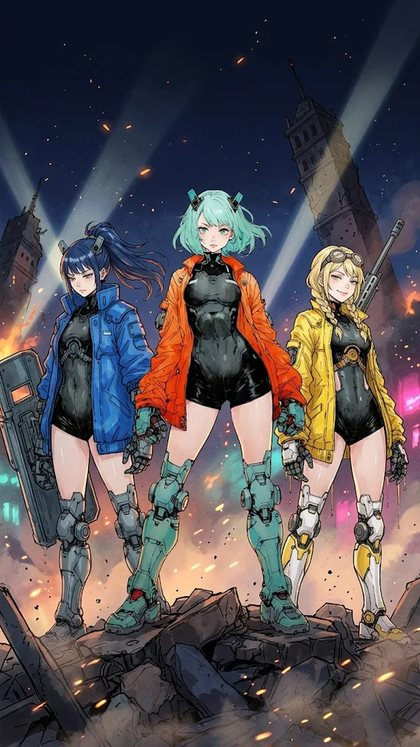
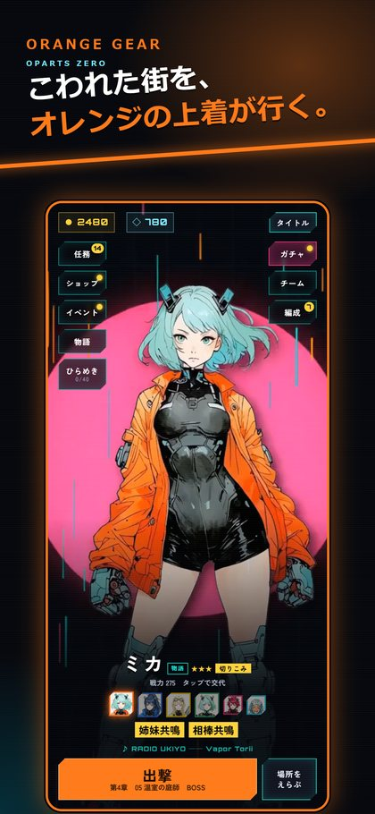
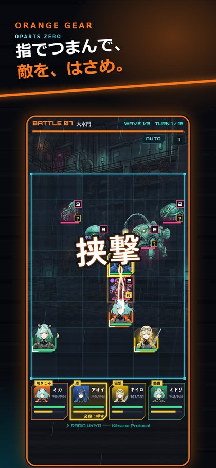
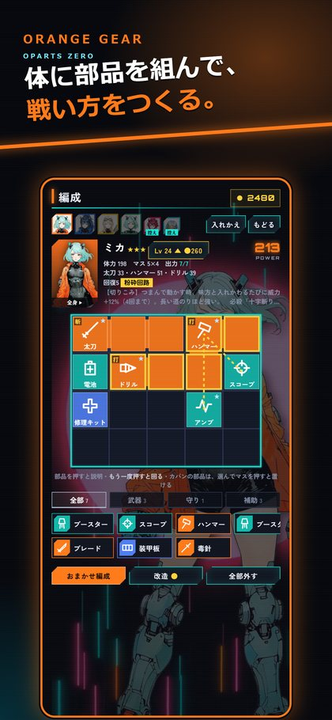
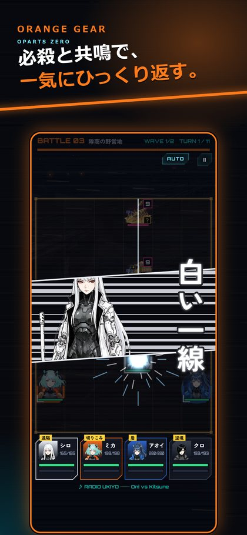
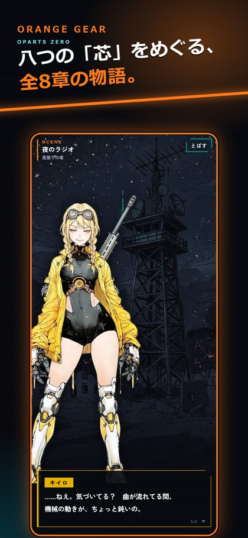
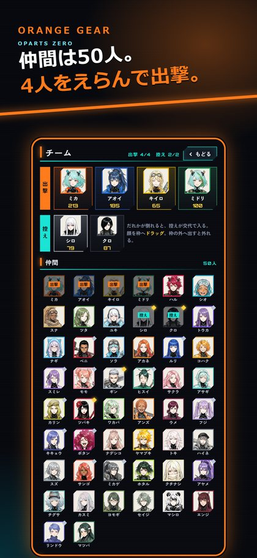

記事・動画でご紹介いただく時の素材と情報をまとめたページです。（最終更新：2026年11月19日）

指でつまんで動かし、味方ふたりで敵を「はさむ」。体に部品を組んで、自分だけの戦い方をつくる。こわれた街を、オレンジの上着の少女が行く、全8章の物語。
| タイトル | ORANGE GEAR ― OPARTS ZERO（オレンジ・ギア オーパーツ・ゼロ） |
|---|---|
| ジャンル | はさみ撃ちバトルRPG（盤面の戦術 × 部品のビルド） |
| 対応機種 | iPhone（iOS） |
| 価格 | 基本無料（アプリ内課金あり） |
| 配信開始 | 2026年11月19日 |
| 対応言語 | 日本語・英語 |
| 開発・販売 | ruby-yama（個人開発） |
| App Store | https://apps.apple.com/jp/app/id6834894960 |
| サポート | https://ruby-yama.github.io/oparts-dive/gear/ |
| 権利表記 | © 2026 ruby-yama |
6×8の盤の上で、味方をひとりつまんで動かすだけ。敵を味方ふたりではさむと攻撃が出ます。となりの味方は「連携」、ななめの線の上の味方は「援護」。通り道の味方とは場所が入れかわるので、ひと動きで盤面が大きく変わります。
キャラの体のマスには、形のちがう部品（ブレード、キャノン、ハンマー、ドリル、電池、スコープなど）を組みこみます。武器によって当たり方が変わり、決まった並べ方を見つけると「回路」が発動します。同じキャラでも、組み方で戦い方が変わります。

ロビー 1290×2796
戦闘（はさみ撃ち） 1290×2796
編成（体に部品を組む） 1290×2796
必殺技 1290×2796
物語 1290×2796
仲間50人 1290×2796ruby-yama：YouTube でロボット作品の解説チャンネルなどを運営する個人開発者です。ゲームの仕組み・物語・音楽を1人で作っています。キャラクターの絵は、開発者自身の絵柄をもとに画像生成AIを使って制作し、切り抜きと調整を行っています。
取材・追加の素材のご依頼は、下のメールへお気軽にどうぞ。
ruby.yamamoto.ai@gmail.com（ruby-yama）
ORANGE GEAR ― OPARTS ZERO is a tactics RPG for iPhone by solo developer ruby-yama. Drag one unit per turn and trap enemies between two allies; fit oddly shaped parts into each fighter's body to build your own way to fight. 50 companions, an 8-chapter story, original music. Free to play, available in English on the App Store. All images and the video on this page may be used freely for coverage; gameplay videos and streams may be monetized without asking.